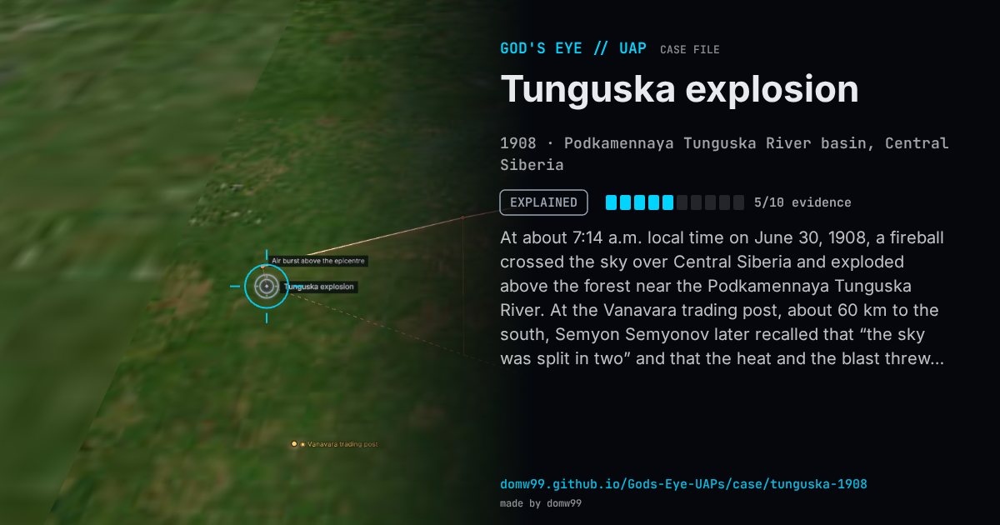

Tunguska explosion

At about 7:14 a.m. local time on June 30, 1908, a fireball crossed the sky over Central Siberia and exploded above the forest near the Podkamennaya Tunguska River. At the Vanavara trading post, about 60 km to the south, Semyon Semyonov later recalled that “the sky was split in two” and that the heat and the blast threw him off the porch. Seismographs as far away as Irkutsk, Tashkent, Tiflis and Jena recorded the shock, and the night skies over Europe and Asia glowed for days. About 2,150 km² of forest, several million trees, were flattened in a radial pattern, but Leonid Kulik’s expeditions, which reached the centre in 1927, found no crater: at the middle the trees still stood, stripped of their branches. The event is explained as the air burst of a small asteroid or comet; the “exploding spaceship” owes its life to a science-fiction story written in 1946.
Explanation
The scientific consensus is the air burst of a stony asteroid or a comet fragment tens of metres across, which exploded some 5 to 14 km above the taiga and left no crater. The idea that an alien spacecraft blew up there began with Alexander Kazantsev’s 1946 science-fiction story “Explosion” and has no physical support.
What was seen
Shape: A fiery body crossing the sky, “a second sun”, then a blinding flash and blast
Witnesses: Evenk herders and settlers; the trading post at Vanavara, about 60 km away
Duration: Seconds; the blast was heard hundreds of kilometres away
Sources
Browse
- Russia
- 1900s
- Explained
- Tracked object events
- Many independent witnesses
- Physical traces
- Infrared or other sensor data
- Lights and fireballs